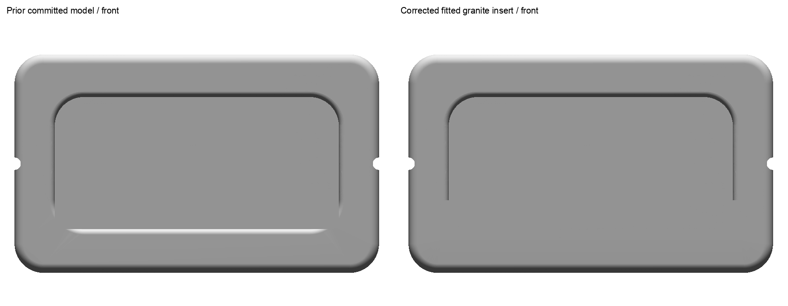
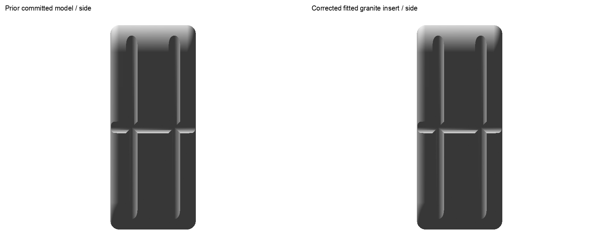
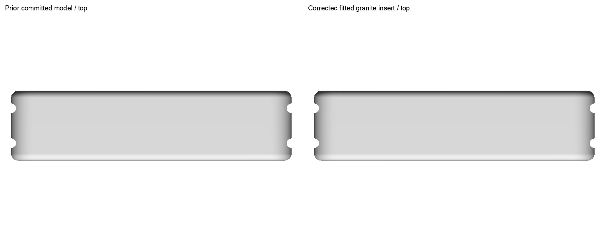

Native checks passed; current app review is unverified. The earlier overall shape approval is preserved. Final seat, finish, shorter cord and jug-pose acceptance remains pending.
The fitted wood rail closes the gap under the unchanged granite insert. Existing runtime metadata assigns wood to the body and granite to the exposed insert. Cord leads are reduced from a 200 mm estimate to 110 mm; four poses were solved against the CAD solid. A separate opening-up jug pose rotates the existing contact upward. Cord lengths, seat details and jug angle are display estimates.
These whole neutral CAD comparisons show geometry only. They contain no finish, highlight or cord rendering. The prior asset is the exact ac077ec8 commit. Click a frame for its full resolution.



| Check | Result |
|---|---|
| Native/source, export and cached cord routes | Passed for the frozen Mini files |
| Python tests | 284 passed, no failures or skips |
| Package validation | 64 canonical packages passed |
| iOS build and installed bytes | Passed; does not establish runtime appearance |
| iOS unit cases and app review | Zero cases executed; one launcher failure; zero current review frames |
| Current wood/granite finish, cords, selection and workout | Unverified: isolated simulator startup blocked |
| Android resource staging | Exact metadata/model bytes; no visual review |
Detailed review and estimate limits · Runtime block evidence · Contact preservation · Native checks · Export checks · Cord solve · Continuous route clearance · Python results · Android staging · Delivery identity · Resource cleanup
The manufacturer Oak product page and retained whole front, reverse, oblique and in-use photos support the unchanged product facts. See source mapping for estimates.